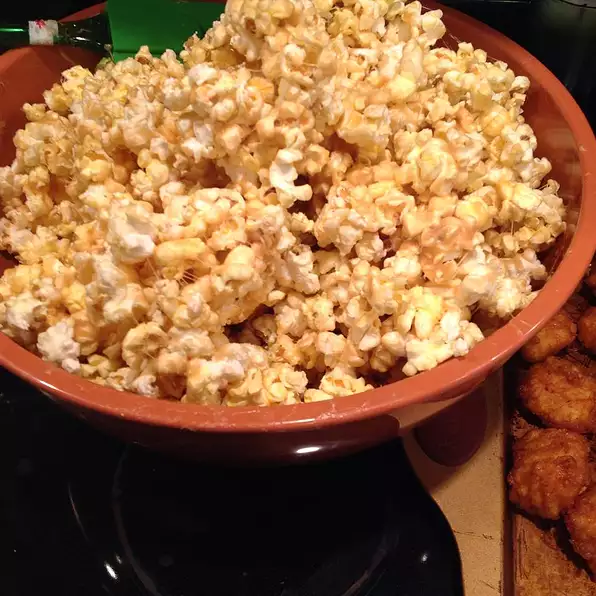

Peanut Butter Popcorn

Peanut Butter Popcorn If you love peanut butter and popcorn you'll love this! Definitely for the sweet tooth though!
Ingredients
- 2 (3.5 ounce) packages microwave popcorn, popped
- ½ cup margarine
- ¾ cup brown sugar
- ¼ cup peanut butter
- 20 large marshmallows
Steps
- Pour popcorn into a large bowl. In a glass or plastic bowl, combine the margarine, brown sugar, and marshmallows. Cook at 1 minute intervals in the microwave, stirring between each time, until the mixture is melted and smooth.
Stir in the peanut butter until well blended. Pour the melted mixture over the popcorn, and stir quickly to coat the corn before it cools.
- Eat
- Be Happy
Back To Homer